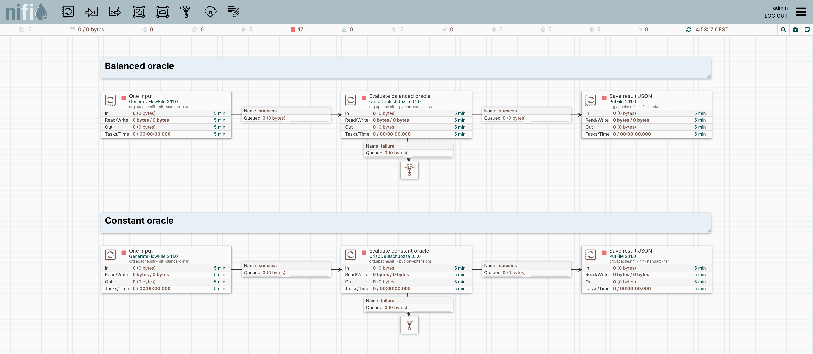

Classify a Boolean oracle
Two configured branches distinguish a constant oracle from a balanced oracle.
1. The problem and the dataflow
Is the Boolean oracle constant or balanced? The two branches use three query qubits plus one ancilla. One branch implements the balanced parity mask 101; the other always returns zero. For these ideal simulator cases, the expected query-register outcomes are 101 and 000 respectively.
- 01Create inputOne empty JSON FlowFile per branch.
- 02Evaluate the oracleQrispDeutschJozsa builds and simulates the configured circuit.
- 03Save distributionPutFile writes the measurement probabilities as JSON.
| Boundary | Data and meaning |
|---|---|
| Input | Empty JSON content; Function Type, Num Qubits, Balanced Mask and Shots are configured properties. |
| Output content | A JSON mapping from query-register bitstrings to probabilities. |
| Output attributes | dj.verdict, dj.function_type, sim.top_result, sim.top_probability. |
| Qubit convention | The leftmost bit represents query qubit 0. The ancilla is not part of the output bitstring. |
RQ1 capability: Configure algorithm behaviour through processor properties and compare two oracle cases.
2. The actual NiFi canvas

3. Inspect the configuration
The following values come from the same specification used to create the NiFi processors.
Balanced oracle
QrispDeutschJozsa — properties
| Property | Configured value |
|---|---|
| Function Type | balanced |
| Num Qubits | 3 |
| Balanced Mask | 101 |
| Shots | 1024 |
Constant oracle
QrispDeutschJozsa — properties
| Property | Configured value |
|---|---|
| Function Type | constant_zero |
| Num Qubits | 3 |
| Shots | 1024 |
Each source creates one JSON input using Run Once (an explicit edge list for MIS, otherwise an empty object). The algorithm parameters are processor properties. PutFile saves the returned probability distribution. The portable flow export uses ./supplementary-results as its output directory. Algorithm failures route to visible inspection queues.
4. Saved execution and independent check
The balanced branch returned 101 and verdict balanced; the constant branch returned 000 and verdict constant. Both saved distributions put all observed probability on the expected result. These two configured oracle cases illustrate component-level programming; they are not an exhaustive test of every oracle.
Balanced oracle
Captured 2026-09-14T11:56:44.863180+00:00. Values are probabilities returned by Qrisp, not integer shot counts. The Shots property was 1024.
Constant oracle
Captured 2026-09-14T11:56:47.091172+00:00. Values are probabilities returned by Qrisp, not integer shot counts. The Shots property was 1024.
Read the machine-readable checks · Inspect the independent checker
5. Reproduce or inspect the implementation
Import the downloadable process group into NiFi with the supplied Python processors installed. Review its output directory, start the downstream processors, and use Run Once on each source. The exported processors are stopped by default.
For exact commands and version details, see the reproduction guide. Installation is optional for reviewing the screenshots, configuration tables, and saved results on this page.